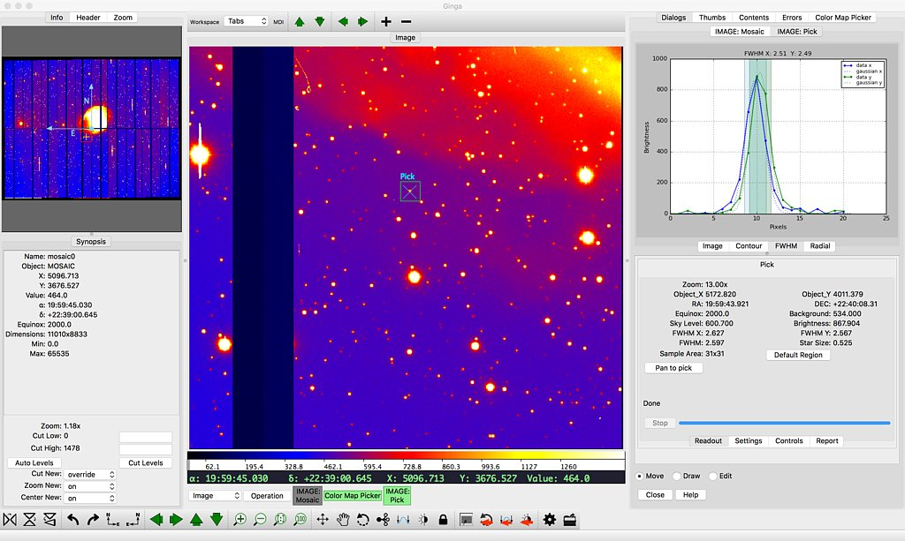

Ginga: a Toolkit for Building Scientific Image Viewers in Python

Ginga is a Python toolkit for building viewers for astronomical and scientific images stored in numpy data arrays.
The certerpiece of the toolkit is a flexible display widget which supports zooming, panning, rotations and transforms, color and intensity mapping, a choice of several automatic cut levels algorithms, and canvases for plotting scalable and editable geometric forms. This widget supports a number of display platforms, including Qt (ver 4/5/PySide), Gtk (ver 2/3), Tk, Matplotlib figures, HTML5 canvases, OpenGL, and more. The widget can be incorporated easily into Python programs (2.7 or 3.5+) running on all the popular desktop and server OSes where Python is available.
In addition to this widget, the toolkit provides many other features for building a viewer, including a flexible plugin framework that is provided as a stock, customizable "reference viewer". A fairly complete set of standard plugins are provided for features that one might expect from a modern FITS viewer: panning and zooming windows, cuts, star pick/FWHM, thumbnails, etc.
Copyright (c) 2011-2017 Eric R. Jeschke. All rights reserved. Ginga is distributed under an open-source BSD licence. Please see the file LICENSE.txt in the top-level directory for details.
$ git clone https://github.com/ejeschke/ginga.git
Or use one of the links above to get a zip or tar ball.
Ginga uses a standard distutils based install, e.g.
$ python setup.py build
or
$ python setup.py install
The program can then be run using the command
gingaGinga is also available from conda channels like "astropy" or "astroconda" and from pip. For more information on installation, please see Detailed Installation Instructions for Ginga
An up-to-date version of the documentation is always available on readthedocs. Be sure to also check out the wiki and FAQ.
Check out the issue tracker.
Please see the various scripts in the examples directory. There is more information for developers in the manual.
"Ginga" is the romanized spelling of the Japanese word "銀河" (hiragana: ぎんが), meaning "galaxy" (in general) and, more familiarly, the Milky Way. This viewer was written by software engineers at Subaru Telescope, National Astronomical Observatory of Japan; thus the connection.
Ginga the viewer may be pronounced "ging-ga" (proper japanese) or "jing-ga" (perhaps easier for western tongues). The latter pronunciation has meaning in the Brazilian dance/martial art capoeira: a fundamental rocking or back and forth swinging motion. Pronounciation as "jin-ja" is considered poor form.